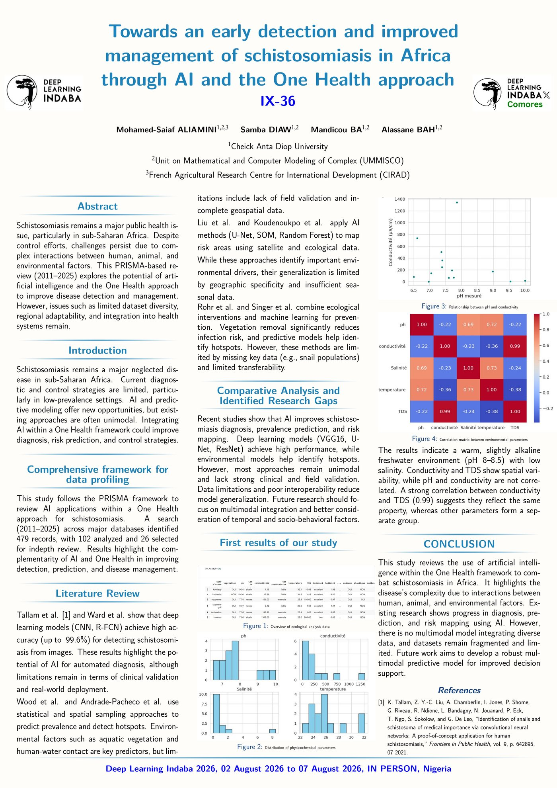

Notre histoire
Deux ans à faire grandir l'IA aux Comores
Avant la 2ᵉ édition, une première rencontre a posé les bases d'une communauté : formation, hackathon, conférences — puis un pas de plus vers la scène panafricaine avec un poster de recherche présenté au Nigéria.
16 – 24 juillet 2024 · Moroni
2024 — La toute première édition
À l'occasion de la Semaine du numérique organisée à Moroni, IndabaX Comores a mené sa première rencontre en partenariat avec l'ACTIC (Association Comorienne des TIC), l'ANADEN et la Chambre de Commerce de Ngazidja. Une semaine considérée comme l'un des tout premiers événements consacrés à l'intelligence artificielle aux Comores.
Formation
Une formation d'introduction à l'intelligence artificielle, au big data, au machine learning et au deep learning, ouverte aux étudiants de l'IUT et aux passionnés de technologie.
Hackathon « Toibibou Bot »
Un hackathon autour d'un assistant santé basé sur l'IA, pensé pour orienter les patients avant une consultation médicale — avec l'ambition d'intégrer à terme la langue comorienne.
Conférences & ateliers
Une série de conférences et d'ateliers animés par des experts nationaux et internationaux, autour de l'impact de l'IA sur le développement environnemental, social et économique des Comores.
« Ensemble, nous pouvons façonner un avenir où l'intelligence artificielle sera utilisée pour le bien de tous. »
— Hamidou Mhoma, président de l'ACTIC12 étudiants de l'IUT ont reçu leur attestation le 23 juillet 2024, lors de la cérémonie officielle de clôture. Le ministre des Télécommunications, Oumouri Mmadi Hassani, et la cheffe du département innovation de l'ANADEN, Aicha Abdourahim, comptaient parmi les intervenants.
Depuis 2026 · Recherche
Rifai — l'IA au services des Comores
Rifai, née à l'issue des initiatives d'IndabaX Comores, est un laboratoire de recherche appliquée dédié à l'intelligence artificielle pour les Comores. Une illustration concrète de ce que la communauté IndabaX Comores contribue à faire émerger.
Publications
Plusieurs articles publiés dans des conférences internationales, dont « Harnessing Transfer Learning from Swahili: Advancing Solutions for Comorian Dialects », présenté au Deep Learning Indaba 2024.
Modèles & jeux de données ouverts
Une dizaine de modèles et douze jeux de données en libre accès sur Hugging Face : reconnaissance et synthèse vocale, dictionnaires et leçons de shimaore, shindzuani, shingazidja et shimwali.
Démo Swauti
Une démonstration de synthèse et de reconnaissance vocale en shiKomori, accessible en ligne — une première étape vers des outils d'IA réellement utilisables par les Comoriens.
Contribution communautaire
Le shiKomori rejoint DVoice Africa
La communauté IndabaX Comores a contribué à DVoice, une initiative panafricaine qui collecte et ouvre des données vocales pour les langues du continent, en y ajoutant le shiKomori — une voix de plus pour les Comores dans l'écosystème africain de la reconnaissance et de la synthèse vocale.
Voir les jeux de données sur DVoice Africa →2 – 7 août 2026 · Lagos, Nigéria
2026 — Les Comores sur la scène panafricaine
En amont de sa 2ᵉ édition, la communauté IndabaX Comores a présenté un poster de recherche au Deep Learning Indaba 2026, le grand rassemblement annuel du réseau panafricain — une première pour le pays.

Towards an early detection and improved management of schistosomiasis in Africa through AI and the One Health approach
Une revue selon la méthode PRISMA (2011–2025) sur le potentiel de l'intelligence artificielle combinée à l'approche « One Health » pour améliorer la détection et la gestion de la schistosomiase en Afrique subsaharienne.
Télécharger le poster (PDF)La suite s'écrit maintenant
Rejoignez la 2ᵉ édition d'IndabaX Comores
Après une première édition fondatrice et une présence remarquée au Nigéria, la communauté se retrouve à nouveau cette année.